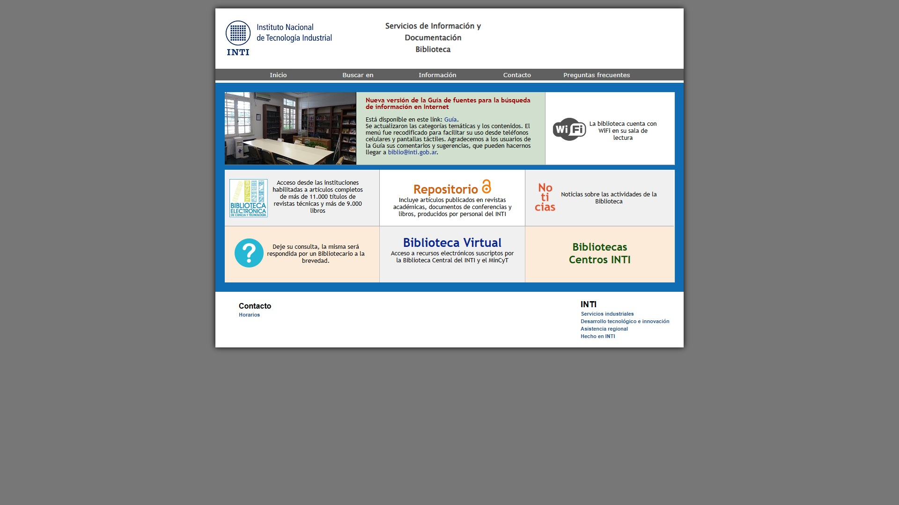
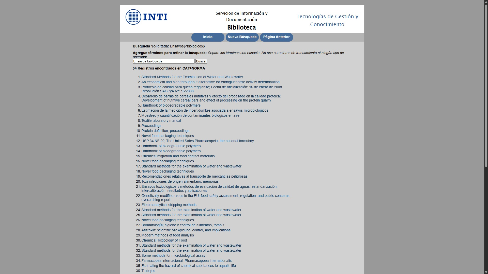
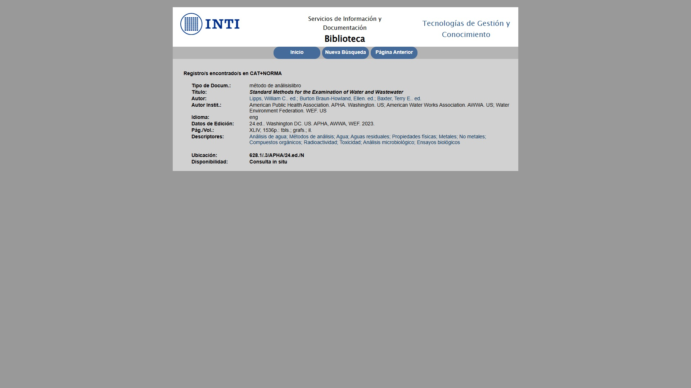
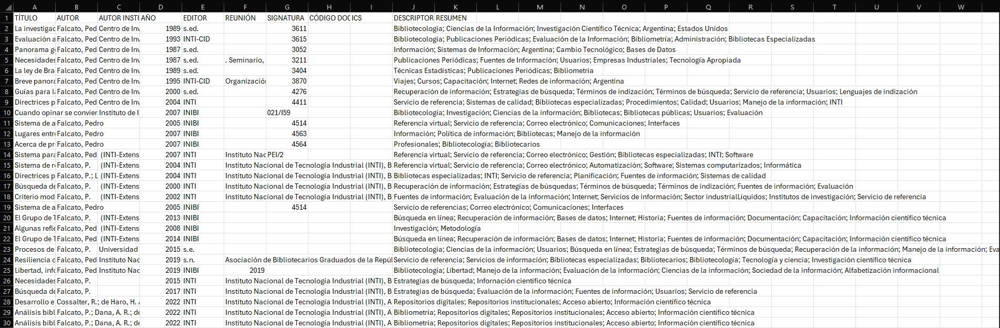
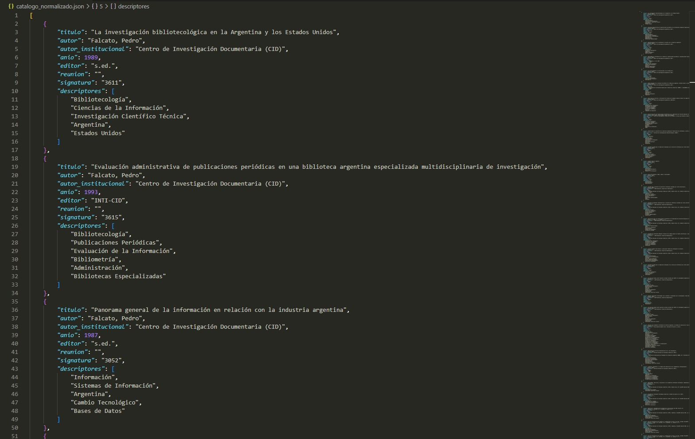
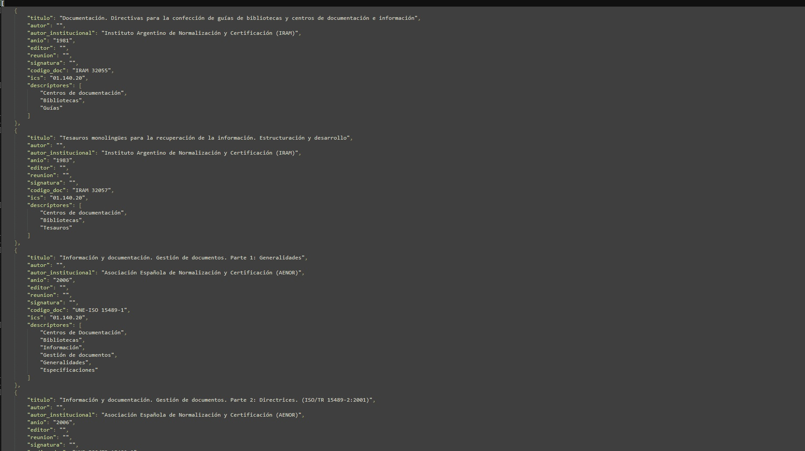
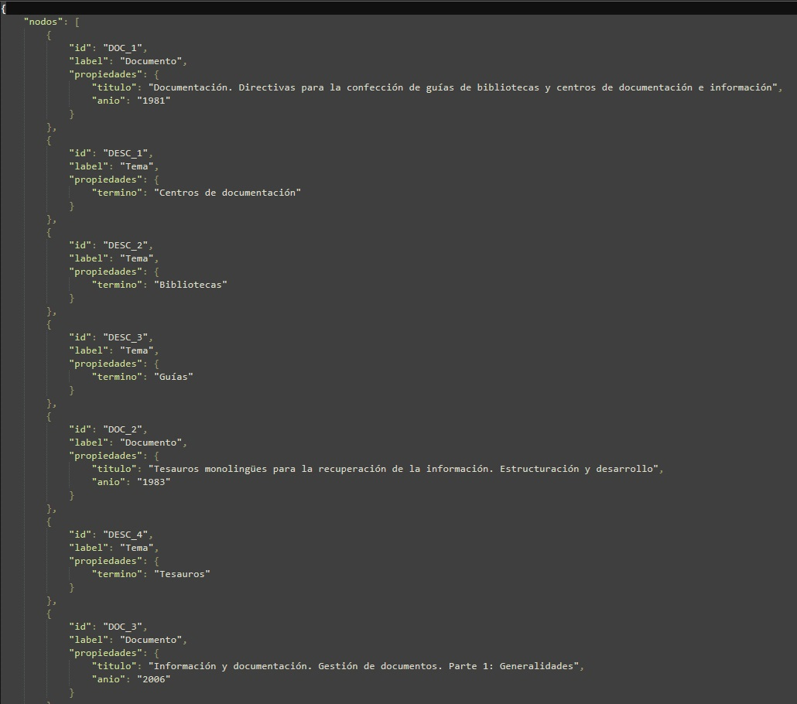
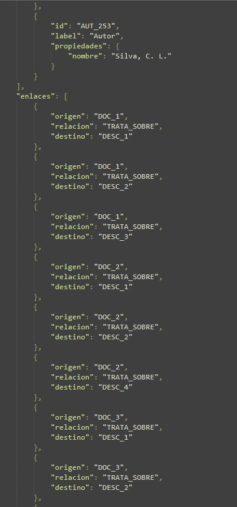
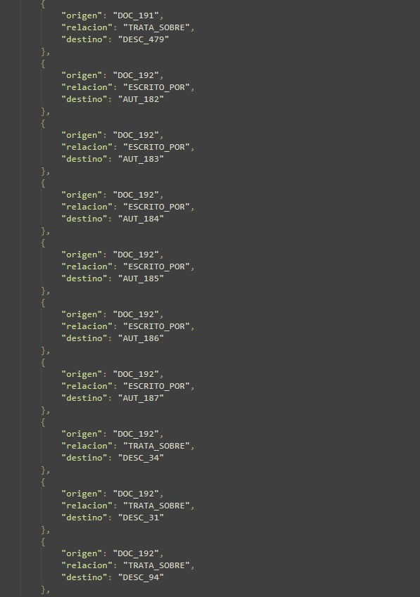

Information Architect & Systems Developer
Bridging the Gap Between
Legacy Data and
Modern Architecture.
Especialista en sistemas de información con foco en la modernización de entornos legacy, arquitectura de metadatos y desarrollo de interfaces eficientes. Construyo puentes entre infraestructura ISIS/WXIS/Apache y la web moderna.
01. Case Study
Modernización del Sistema Web de la Biblioteca INTI
El punto de partida: una interfaz construida sobre tecnología de los años 2000, sin documentación, sin diseño responsivo y con lógica de búsqueda dispersa en archivos sin estructura. Abajo, el antes y el después.
Antes — Sistema legacy



Después — Sistema modernizado


Reingeniería & Automatización
Biblioteca Central INTI
www-biblio.inti.gob.ar/prueba/ ↗El Problema
Sistema web legacy construido sobre bases ISIS y scripts WXIS sin documentación. La lógica de búsqueda estaba dispersa en archivos .xis y formatos ISIS, operando como silos inaccesibles para la web moderna. Sin diseño responsivo, sin exportación de datos, sin sugerencias de búsqueda.
Proceso de Ingeniería
- Auditoría e ingeniería inversa de scripts
.xisy archivos.fdtde cada base de datos - Reescritura completa de los diversos scripts de búsqueda y exportación (
simple.xis,avanzada.xis,descriptor.xis,registrounico.xis,export.xis) - Extracción del tesauro → normalización a JSON → sistema de sugerencias en tiempo real integrado al buscador
- Búsqueda avanzada multi-campo con limpieza de caracteres especiales para mejorar el recall
- SEO técnico y security hardening en servidor Apache (headers, caché, configuración)
Funcionalidades Entregadas
- Funciones de guardar y compartir búsquedas vía URLs persistentes
- Exportación de resultados a CSV y TXT
- Paginación moderna con selector numérico de página
- Registros bibliográficos rediseñados, responsivos y accesibles
- Interconexión entre Diccionarios Técnicos y Catálogo Bibliográfico
Proyecto 02
Data Normalizer Pipeline (ETL)
El contraste visual de la curaduría de datos: a la izquierda, la materia prima (CSV legacy) con delimitadores anómalos. A la derecha, el resultado de la transformación (JSON) con su jerarquía semántica recuperada.
Antes — CSV Legacy en crudo

Después — JSON Estructurado

Data Engineering & Python
Motor de Transformación a JSON
github.com/fotilejo/data-normalizer-etl ↗El Problema
Las exportaciones masivas de sistemas bibliotecológicos legacy presentan inconsistencias críticas (conflictos de encoding, delimitadores inyectados, campos repetibles colapsados en texto plano) que impiden su migración a bases de datos modernas.
Proceso de Ingeniería
- Desarrollo de script de diagnóstico exploratorio (EDA) para mapear la base cruda.
- Automatización de limpieza estructural mediante Pandas (purga de nulos y estandarización
snake_case). - Transformación de cadenas planas en listas iterables reales para recuperar la jerarquía de metadatos.
- Exportación de alta precisión a formato JSON, listo para su ingesta en la Web Semántica.
Proyecto 03
Semantic Graph Builder
El salto a la Web Semántica: a la izquierda, el catálogo estructurado pero "plano" (islas de información). A la derecha, la topología de Grafo donde documentos, autores y temas se transforman en nodos interconectados matemáticamente.
Antes — JSON Plano (Materia Prima)

Después — Nodos y Relaciones (Grafo)



Knowledge Graphs & Semantic Web
Motor de Entidades y Control de Autoridades
github.com/fotilejo/semantic-knowledge-graph-builder ↗El Problema
Las bases de datos bibliográficas y los repositorios institucionales tradicionales almacenan información redundante (ej. el nombre de un autor repetido decenas de veces). Esto crea "silos de datos" aislados que impiden la implementación de motores de descubrimiento modernos, búsquedas por inferencia o arquitecturas GraphRAG para Inteligencia Artificial.
Ingeniería & Utilidad
- Extracción dinámica: Despiece algorítmico de registros bibliográficos planos en entidades independientes (Documentos, Autores, Temas).
- Control de Autoridades al vuelo: Uso de diccionarios en memoria y normalización de strings (capitalización) para garantizar la unicidad de cada nodo.
- Modelado Semántico: Generación estructurada de Tripletas Semánticas (Sujeto - Predicado - Objeto) asignando UUIDs trazables.
- Impacto Real: Conversión de un catálogo estático de 2.500 registros en una red semántica densa compuesta por 1.104 Nodos únicos y 2.237 Relaciones, preparada para ingesta en bases de datos orientadas a grafos.
02. Core Capabilities
Stack & Skills
Library Systems
ISIS / Koha / DSpace
Implementación y modernización de SIGB (Koha, ABCD, Alma) y repositorios institucionales (Greenstone 3, DSpace).
Metadata Standards
RDA / MARC21 / AACR2
Normalización internacional de metadatos bibliográficos. Tesauros, descriptores y vocabularios controlados (CDU, LEMB, FOCAD).
Web & Infraestructura
HTML/CSS/JS · Apache
Desarrollo de interfaces responsivas e integración con backends legacy. Administración de servidores Apache, SEO y hardening de seguridad.
Soft Skills
Comunicación & Docencia
Años de experiencia docente en nivel secundario forjaron capacidad de síntesis, manejo de grupos y comunicación técnica a distintas audiencias.
03. Experience
Experiencia Laboral
Bibliotecario · Sistemas & Procesos Técnicos
- Diseño y desarrollo del nuevo sitio web de la Biblioteca: frontend, integración backend con bases ISIS y administración del servidor Apache
- Desarrollo de scripts para re-etiquetación e integración de datos legacy con la interfaz moderna
- Administración del repositorio institucional en Greenstone 3: colecciones, flujos de importación y nueva interfaz
- Catalogación con AACR2/FOCAD, clasificación CDU y uso de tesauro especializado en tecnología industrial
Bibliotecario Escolar · Cargo Titular
- Gestión integral de la biblioteca: procesos técnicos, inventariado y servicio de circulación
- Coordinación de actividades de fomento a la lectura con docentes de nivel primario y secundario
Prácticas Profesionales en Bibliotecología
- Procesos técnicos: catalogación en AACR2 y MARC21
- Circulación: gestión de usuarios, préstamos, reservas y atención al público
Profesor de Historia · Nivel Secundario
- Dictado de clases, diseño curricular y evaluación continua
- Formación de grupos de hasta 35 estudiantes: habilidades de síntesis, liderazgo y comunicación técnica aplicadas hoy al trabajo con equipos y usuarios
04. Profile
Sobre Mí
Soy bibliotecario y especialista en sistemas de información con un fuerte perfil tecnológico. Cuento con dos títulos de grado por la Universidad de Buenos Aires (UBA) — en Bibliotecología y Ciencia de la Información y en Historia — que me formaron con algo que no abunda en el mercado tech: rigor metodológico para estructurar, clasificar y recuperar volúmenes masivos de datos complejos.
En el INTI, tomé un sistema web legacy que nadie quería tocar, lo entendí desde los cimientos mediante ingeniería inversa, y lo reconstruí por completo: reescribí scripts de búsqueda, modifiqué bases de datos, integré un tesauro en formato JSON y llevé la interfaz a estándares modernos. El resultado vive en producción y es usado por investigadores todos los días.
Trabajo con IA (Claude, Gemini) como multiplicador de velocidad de entrega — lo que se conoce como vibe coding — para construir soluciones que combinan el conocimiento profundo de los datos con la capacidad de entregarlos en interfaces eficientes.
Educación & Formación